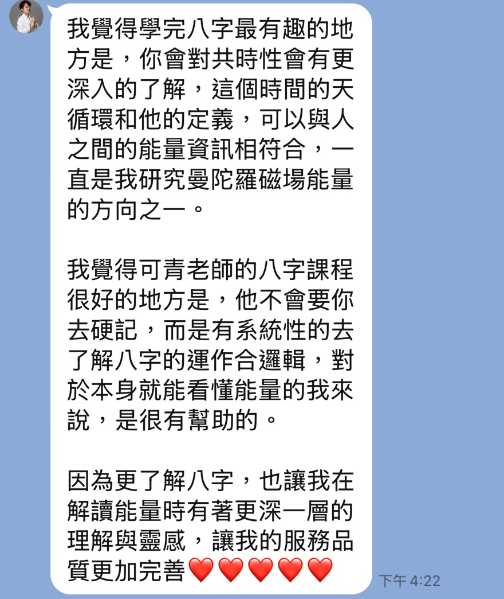
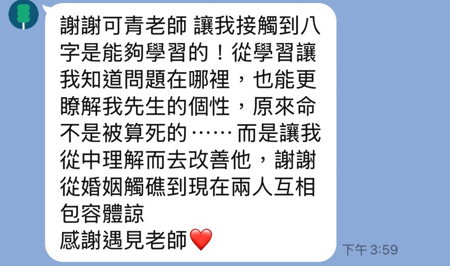
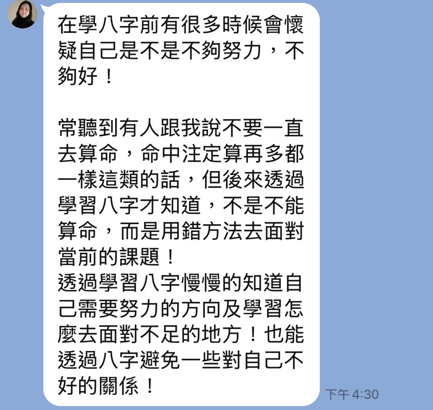
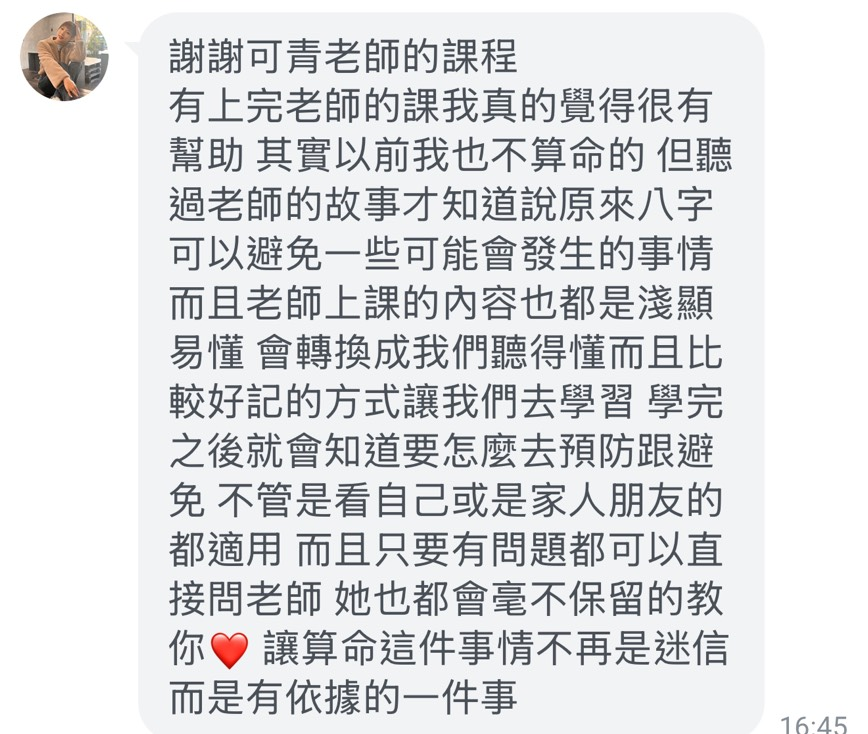
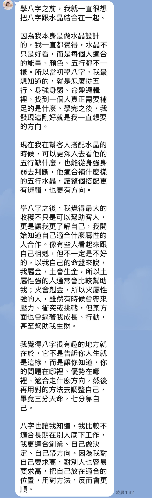
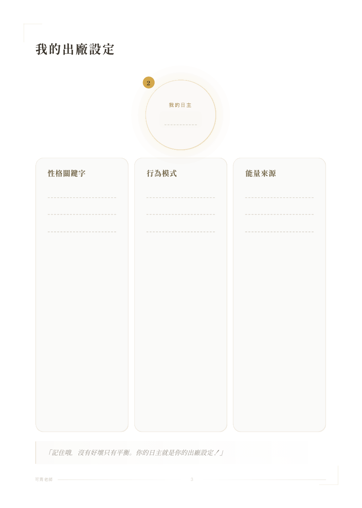
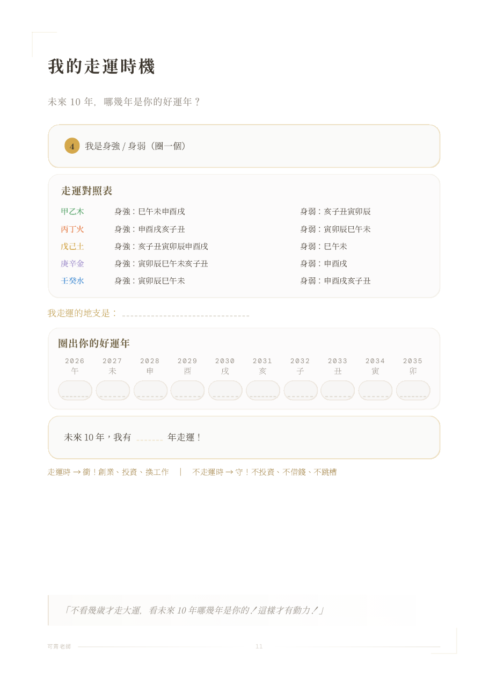

Step 1：下載排盤 App
iPhone 用戶
搜尋「八字萬年曆」
App Store ｜ 免費
Android 用戶
搜尋「論八字」
Google Play ｜ 免費
下載好的請打字「好了」
人生說明書
可青老師的人生使用說明書方法
今晚先看懂財運這一頁，正課完成整本 19 頁手冊
可青老師的方法
今晚先從財運這一頁開始。
老師的故事
最痛苦的不是不順——
是不知道為什麼不順
以前的我
命盤如果只被拿來判定，就會讓人失去行動感。
後來我才看懂
地圖不替你走路，但會告訴你現在在哪裡、哪條路比較耗力、哪個方向比較順。
命 ＝ 體質（不會變）
運 ＝ 節奏（會動的）
體質 × 節奏 ＝ 你的人生
今天先看財運這一頁，背後其實是在看你的使用模式。
今晚先完成
不是免費算完答案，而是開始看懂你的第一頁。
今天的主軸
是讓你看見：
我為什麼一直用同一種方式卡住？
今天完成第一頁，正課完成整份人生說明書。
準備好了嗎？
打開你的手機
接下來，我們一起排出你的命盤
iPhone 用戶

搜尋「八字萬年曆」
App Store ｜ 免費
Android 用戶

搜尋「論八字」
Google Play ｜ 免費
下載好的請打字「好了」
不知道出生時間？沒關係——六個字也能看很多
| 時 | 日（我） | 月 | 年 | |
|---|---|---|---|---|
| 49-64 歲 | 33-48 歲 | 17-32 歲 | 1-16 歲 | |
| 你 | 十神 | 日元 | 十神 | 十神 |
| 的 | 天干 | 天干 | 天干 | 天干 |
| 命 | 地支 | 地支 | 地支 | 地支 |
| 盤 | 藏干 | 藏干 | 藏干 | 藏干 |
4 柱 × 2 字 ＝ 八字。日柱天干就是「你」
排盤 App 上，每個字旁邊都有顏色標示
看你的排盤 App，數每種顏色出現幾次，寫在紙上：
先數，等一下老師帶你看什麼意思
數好了告訴我，你最多的是什麼？
| 五行 | 財運類型 | 表面行為 | 背後卡點 |
|---|---|---|---|
| 木 | 衝勁財 | 有衝勁、愛規劃、有目標 | 怕自己沒價值 |
| 火 | 爆發財 | 熱情外向、會帶氣氛 | 害怕被忽略 |
| 土 | 厚積財 | 照顧人、扛責任、可靠 | 很難拒絕別人 |
| 金 | 精算財 | 理性、有原則、俐落 | 很怕失控 |
| 水 | 靈感財 | 安靜敏感、觀察力強 | 容易內耗 |
這裡先看見卡點，不急著下結論。
但……你有沒有注意到，
你反覆卡住的地方，通常不是表面行為，而是背後卡點。
今天先知道「我容易怎麼卡」，正課再學「我要怎麼調」
先看見卡點，不急著下結論。
先看見卡點，不急著下結論。
先看見卡點，不急著下結論。
先看見卡點，不急著下結論。
先看見卡點，不急著下結論。
你的天賦，你已經知道了
但你真正要學的——
是把卡點放回整張命盤裡看
今天先有恍然大悟
正課才會帶你找到調整方向
在那之前——
你的盲點在哪裡，你已經知道了
但……什麼時候會出事？
先用 7 月示範：你的五行什麼時候被挑戰？
2026・7 月
先找到你的日主——再學會每個月怎麼追蹤自己
💡 日主就是你命盤裡的 日柱天干
今天先看懂 7 月，正課再帶你建立完整追蹤框架
7 月 ・ 乙未月
先看這個月會放大你哪一種慣性
7 月讀法
今天先示範方法，完整追蹤要放回整張命盤。
正課才會完整帶你做
今天只看 7 月，正課才做整套人生追蹤框架
信念 #2
同樣屬木，補錯方向 = 越來越固執、越來越聽不進別人的話
現場示範
案例示範
火太多的人，身體也會提醒你失衡
心血管、血壓、眼睛、發炎方向——
不能當成醫療判斷，而是更早看見自己容易失衡在哪裡
完整判斷不能只看一點，要回到整張人生說明書
老師教學段總結
今天完成的是第一頁
接下來由主持人說明：正課如何把第一頁補成整本人生說明書。
正課名稱

真實學員回饋

真實學員回饋


真實學員回饋


誰最適合參加這個課程？
正課完成品
這不是一份講義，也不是聽完就忘的筆記。
你將學會什麼
每一段都會寫回 19 頁人生說明書，讓你回家可以查、可以對照、可以再修正。
你將學會什麼 01
你將學會什麼 02
19 頁人生說明書

19 頁人生說明書

完成 19 頁手冊的好處
完成手冊後 01
完成手冊後 02
可青八字人生說明書一日實作課
完整命盤
身強身弱 ・ 十神
合盤關係
大運 ・ 流月
健康 ・ 環境
健康提醒僅作自我照顧參考，正式判斷請交給專業人員。
人生說明書
上完正課
報名正課
今晚講座方案
不是因為便宜，而是讓今晚已經看見卡點的人，直接把工具學完整。
今晚講座限定
6 / 6 台中場
6 / 21 台北場
報名流程在 LINE 裡完成；還在考慮，也可以先加 LINE 領簡報。
QR Code ・ 報名連結也在聊天室
講座限定
人生
說明書
財運簡報
加 LINE 立刻索取
《人生財運簡報》
PDF 是複習今天第一頁
正課才是現場做出自己的版本
REGISTRATION PATH
留言「財運簡報」
先領今天 PDF
也會看到正課入口
點圖文選單
選「人生說明書實作課」
進入報名問卷
填寫報名問卷
SurveyCake 問卷
約 3 分鐘
完成刷卡或匯款
藍新金流安全刷卡
或中國信託匯款
Q & A 時間
在聊天室打你的問題
報名連結持續開放中
講座限定優惠 NT$6,800 ・ 限額 30 位
不管你今天有沒有報名
你已經踏出了第一步
認識自己，永遠不嫌晚
— 可青老師